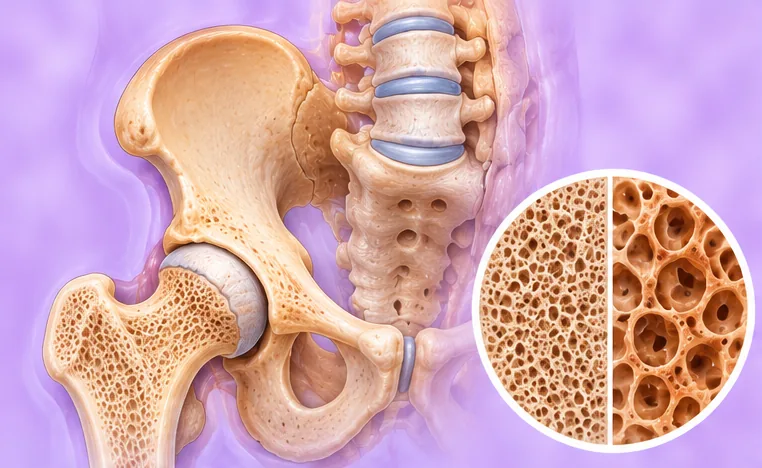
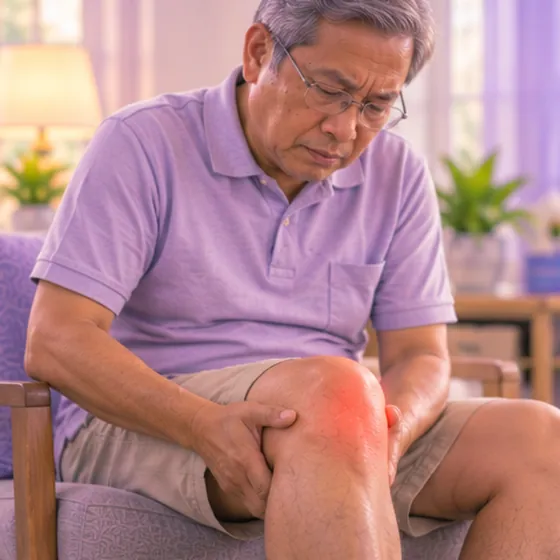
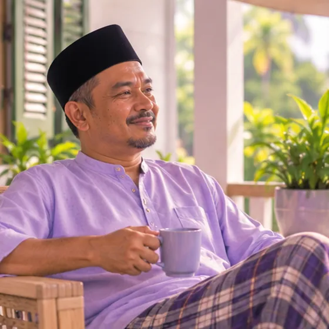

Osteokondromatosis (banyak ketumbuhan tulang)
Keadaan diwarisi dengan banyak ketumbuhan tulang pada tulang
Apa itu
Beberapa ketulan tulang yang dipanggil osteokondroma tumbuh di permukaan tulang, selalunya berhampiran sendi. Ia biasanya berlaku dalam keluarga dan muncul semasa kanak-kanak.
- Lengan, kaki, berhampiran sendi
- Selalunya bermula semasa kanak-kanak
- Ketulan keras pada tulang
- Jumpa doktor
- Doktor ortopedik, doktor kanak-kanak, doktor genetik
- Biasa pada
- Kanak-kanak dan orang muda; selalunya ada dalam keluarga
- Berjangkit
- Tidak
- Perjalanan
- Ketumbuhan selalunya muncul semasa kanak-kanak; doktor akan memantaunya dari semasa ke semasa
Tanda biasa

Ketulan di bawah kulitKetulan subkutaneus 
Pergerakan sendi berkurangJulat gerakan berkurang
Tanda-tanda lain
- Ketulan yang tersangkut pada otot atau pakaian lalu menjadi sakit
- Satu lengan atau kaki yang kelihatan lebih pendek atau sedikit bengkok
- Ketinggian lebih pendek daripada ahli keluarga lain
Mengapa ia berlaku
- Biasanya perubahan gen yang diwarisi dalam keluarga
- Kadang-kadang ia muncul buat kali pertama pada orang tanpa sejarah keluarga
- Ia tidak disebabkan oleh makanan, kecederaan atau perbuatan ibu bapa
- Ibu bapa yang mempunyai keadaan ini menjadikan anak lebih berkemungkinan menghidapnya
Jumpa doktor dahulu jika
- Ketulan yang membesar dengan cepat, atau menjadi sakit tanpa terhantuk
- Kebas, rasa geletar atau lemah pada lengan atau kaki
- Anggota badan yang menjadi pucat, sejuk atau biru, atau ketulan yang menekan salur darah: ke hospital
- Tulang yang seolah-olah patah selepas terhantuk ringan: ke hospital
- Kanak-kanak yang tiba-tiba berjalan tempang atau anggota badan bengkok: jumpa doktor segera
Jika mana-mana berkenaan, sila jumpa doktor sebelum sesi.
Halaman ini ialah maklumat am. Sila terus mengambil ubat biasa anda dan terus berjumpa doktor.
Teruskan mengambil ubat biasa anda dan terus berjumpa doktor. Sesi kami ialah sokongan lembut dan tidak menggantikan rawatan perubatan.
Menjaga diri

Jumpa doktor untuk pemeriksaanSusulan perubatan berkala 
Kekal aktif setiap hariAktiviti fizikal berkala 
Pakai pakaian kapas longgarPakaian bernafas
Lebih banyak cara menjaga diri
- Beritahu doktor keluarga tentang sebarang ketulan baru atau yang berubah
- Tanya doktor genetik tentang soalan berkaitan keluarga
Beritahu ahli terapi anda
- Tulang lemah
- Lengan kebas atau kesemutan
- Kaki kebas atau kesemutan
- Perentak jantung atau implan logam
- Kehamilan
Ahli terapi anda akan menyemaknya bersama anda sebelum bermula.
Soalan dan jawapan
Apakah Osteokondromatosis (banyak ketumbuhan tulang)?
Keadaan diwarisi dengan banyak ketumbuhan tulang pada tulang. Beberapa ketulan tulang yang dipanggil osteokondroma tumbuh di permukaan tulang, selalunya berhampiran sendi. Ia biasanya berlaku dalam keluarga dan muncul semasa kanak-kanak.
Apakah tanda biasa Osteokondromatosis (banyak ketumbuhan tulang)?
Ketulan di bawah kulit · Pergerakan sendi berkurang
Mengapa Osteokondromatosis (banyak ketumbuhan tulang) berlaku?
Biasanya perubahan gen yang diwarisi dalam keluarga · Kadang-kadang ia muncul buat kali pertama pada orang tanpa sejarah keluarga · Ia tidak disebabkan oleh makanan, kecederaan atau perbuatan ibu bapa · Ibu bapa yang mempunyai keadaan ini menjadikan anak lebih berkemungkinan menghidapnya
Bagaimana menjaga diri dengan Osteokondromatosis (banyak ketumbuhan tulang)?
Jumpa doktor untuk pemeriksaan · Kekal aktif setiap hari · Pakai pakaian kapas longgar
Bolehkah sesi AI Body Master membantu Osteokondromatosis (banyak ketumbuhan tulang)?
Sesi ialah sokongan meridian tanpa jarum yang lembut untuk kesejahteraan anda. Ia tidak merawat atau menyembuhkan Osteokondromatosis (banyak ketumbuhan tulang) dan tidak menggantikan ubat atau doktor anda. Beritahu ahli terapi anda sebelum sesi bermula.
Keadaan berkaitan
- Kaki rata
- Penyakit tulang rapuh (osteogenesis imperfekta)
- Artritis pascatrauma
- Penyakit Kashin-Beck
- Sendi pinggul berbunyi klik
- Fluorosis tulang
- Tendinopati Achilles
- Tendonitis Achilles
- Koyak bahagian belakang meniskus (lutut)
- Meniskus haus (lutut)
- Kecederaan saraf brakial (saraf bahu dan lengan)
- Patah akibat tulang lemah
Rujukan: General information based on public health sources such as Mayo Clinic, NHS, Cleveland Clinic and NCBI StatPearls.
Halaman dikemas kini: 2026-11-01